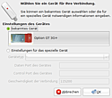
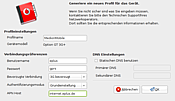
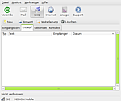
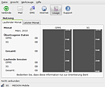

Vodafone Mobile Connect
Archivierte Anleitung
Dieser Artikel wurde archiviert, da er - oder Teile daraus - nur noch unter einer älteren Ubuntu-Version nutzbar ist. Diese Anleitung wird vom Wiki-Team weder auf Richtigkeit überprüft noch anderweitig gepflegt. Zusätzlich wurde der Artikel für weitere Änderungen gesperrt.
Zum Verständnis dieses Artikels sind folgende Seiten hilfreich:
Vodafone Mobile Connect  ist wie UMTSmon eine weitere Lösung, um eine Internetverbindung über das Mobilfunknetz zu steuern. Zwar bietet der NetworkManager die gleiche Funktionalität, allerdings gibt es immer wieder Probleme bei mancher Hardware. Zusätzlich unterstützt das Programm den Empfang und den Versand von SMS, eine Verbindungsstatistik (interessant bei Volumentarifen) und Zugriff auf das Adressbuch der SIM-Karte.
ist wie UMTSmon eine weitere Lösung, um eine Internetverbindung über das Mobilfunknetz zu steuern. Zwar bietet der NetworkManager die gleiche Funktionalität, allerdings gibt es immer wieder Probleme bei mancher Hardware. Zusätzlich unterstützt das Programm den Empfang und den Versand von SMS, eine Verbindungsstatistik (interessant bei Volumentarifen) und Zugriff auf das Adressbuch der SIM-Karte.
Die Firma Vodafone bietet als globaler Mobilfunk-Provider diverse Datenkarten, USB-Sticks und Router für UMTS unter eigenem Namen an. Vodafone entwickelt aber keine eigene Hardware. Man kauft, wie viele andere Mobilfunkfirmen auch, die Hardware in Asien und lässt diese mit dem eigenen Logo versehen (Branding). Daher kann das Programm ohne Einschränkungen auch mit anderen Netzbetreibern (Providern) genutzt werden. Folgende Liste hilft bei der Suche, ob man eine kompatible UMTS-Hardware besitzt. Eine empfehlenswerte Lektüre dazu ist auch die Einleitung des Artikels USB ModeSwitch. Diese hilft beim Verständnis, warum UMTS unter Linux problematisch sein kann.
Über die Entwicklerplattform Betavine wird die Python-basierte Steuerungssoftware dieser Geräte - früher als Vodafone Mobile Connect driver for Linux oder VMCCd4l bekannt - nicht nur für Ubuntu angeboten.
Installation¶
Hinweis:
Zur Installation - der Abhängigkeiten des Hauptprogramms - sollte man bereits mit dem Internet verbunden sein. Ansonsten ist der Vorgang extrem mühsam.
Die Entwickler stellen eine ausführliche Installationsanleitung für Ubuntu zur Verfügung, die allerdings veraltet ist und hier nicht weiter beschrieben wird. Die Installation erfordert drei Einzelpakete:
usb-modeswitch
ozerocdoff
vodafone-mobile-connect (das Paket mit der höchsten Versionsnummer; svn-Versionen sind veraltet)
Diese Pakete müssen heruntergeladen  und in einer bestimmten Reihenfolge installiert werden. Nutzer einer 64-Bit-Installation können spezielle 64-Bit Pakete von usb-modeswitch und ozerocdoff herunterladen. Das Hauptprogramm selbst läuft unter 32- und 64-Bit Systemen.
und in einer bestimmten Reihenfolge installiert werden. Nutzer einer 64-Bit-Installation können spezielle 64-Bit Pakete von usb-modeswitch und ozerocdoff herunterladen. Das Hauptprogramm selbst läuft unter 32- und 64-Bit Systemen.
Hinweis!
Fremdsoftware kann das System gefährden.
Die Installation [2] beginnt mit den Paketen
usb-modeswitch
ozerocdoff
Hinweis:
Ab Ubuntu 9.10 Karmic Koala ist usb-modeswitch bereits in den offiziellen Paketquellen enthalten. Prinzipiell ist es egal, welche Version man verwendet. Bei Problemen sollte die neuere Version bevorzugt werden. Welche Version in Ubuntu enthalten ist, erfährt man über die Ubuntu Paketsuche .
Nun folgt nun das Hauptprogramm mit dem Paket
vodafone-mobile-connect
Hinweis:
Ubuntu 10.04 Lucid Lynx erfordert die Version 2.25.
Folgende Abhängigkeiten des Hauptprogramms werden bei Bedarf automatisch nachinstalliert (Voraussetzung dafür ist eine bestehende Internetverbindung):
wvdial
hal
python-twisted
python-serial
python-sqlite, universe
python-tz, ab Ubuntu 9.10 Karmic Koala in universe
python-gobject
python-dbus
python-cairo
python-crypto
python-gtk2
python-gnome2
python-gnome2-extras, nur bis Ubuntu 9.10 Karmic Koala
lsb-release
python-glade2
Anschließend steht das Programm im Menü unter "Anwendungen -> Internet -> Vodafone Mobile Connect" zur Verfügung.

Bedienung¶
Beim ersten Programmstart wird versucht, die verwendete Hardware automatisch zu erkennen. Scheitert die automatische Erkennung, dann muss man die zu verwendenden Schnittstellen wie z.B. /dev/ttyS0 oder /dev/ttyUSB0 von Hand eingeben. Was man konkret eintragen muss, ist von der vorhandenen Hardware abhängig und lässt sich nicht pauschal beantworten.
PIN-Abfrage¶
Normalerweise sind SIM-Karten mit einer PIN vor dem unberechtigten Zugriff geschützt. Entweder schaltet man die PIN-Abfrage ab (bequem, aber unsicher bei Verlust) oder man aktiviert die Option "Werkzeuge -> Fordere PIN an". Dann wird beim Programmstart die PIN abgefragt.
Das Abschalten der PIN erfolgt durch Einlegen der SIM-Karte in ein beliebiges Handy. Dort sucht man im Menü nach der Möglichkeit, die PIN zu deaktivieren (häufig beispielsweise unter "Sicherheit" oder "Telefoneinstellungen").

Internet¶
Um eine Internetverbindung aufbauen zu können, muss zunächst mindestens ein Profil eingerichtet werden. Dazu sind außer einem Profilnamen folgende Angaben erforderlich:
Benutzername
Passwort
APN
Hinweise zu verschiedenen Providern findet man im Übersichtsartikel UMTS. Zusätzlich kann man die "bevorzugte Verbindung" (3G = UMTS), den "Authentifizierungsmodus" (PAP, CHAP) und max. zwei "statische DNS-Server" manuell konfigurieren. Dies sollte aber normalerweise nicht notwendig sein.
Der eigentliche Verbindungsaufbau erfolgt mit der Schaltfläche "Verbinde" links oben. Mit zwei weiteren Schaltflächen können bei Bedarf direkt der Browser und das E-Mail Programm gestartet werden.

SMS¶
Das Programm kann empfangene SMS anzeigen oder neue verschicken. Darüber hinaus hat man Zugriff auf das Adressbuch der SIM-Karte, das auch als .csv-Datei exportiert und beispielsweise mit OpenOffice geöffnet werden kann.
Nutzungs-Statistik¶
Interessant, um bei Volumentarifen den Überblick zu behalten. Aufrufen kann die Nutzungs-Statistik über die Schaltfläche "Usage" oder über "Ansicht -> Nutzung".  Angezeigt werden Informationen für den laufenden und den letzten Monat, und zwar als "übertragende Daten" gesamt als auch für die aktuelle Sitzung (Session).
Problembehebung¶
Siehe auch Mobiler Datentransfer/UMTS-Checkliste.
Adressbuch¶
Vereinzelt werden Einträge aus dem Adressbuch der SIM-Karte falsch (falscher Zeichensatz?) angezeigt. Eine Lösung ist nicht bekannt.
Einstellungen löschen¶
Das Programm verwaltet seine Konfiguration im versteckten Ordner ~/.vmc2. Bei einer Neuinstallation sollte man auch diesen Ordner löschen. Nur dann wird versucht, die eingesetzte Hardware wieder automatisch zu erkennen.
Benutzerrechte¶
Während die Nutzung des Programms für den bei der Installation eingerichteten Benutzer normalerweise kein Problem darstellt, kann es nach der Einrichtung weiterer Benutzer bei diesen zu Problemen kommen. Um Vodafone Mobile Connect nutzen zu können, müssen diese Benutzer der Gruppe "dialout" angehören [3]. Das Gleiche gilt für die Einrichtung neuer UMTS-Hardware. Diese sollte daher von einem Benutzer mit Root-Rechten vorgenommen werden.
Interne UMTS-Geräte¶
Wenn trotz aller Bemühungen eingebaute UMTS-Geräte nicht erkannt werden (z.B. ein Sierra Wireless Mobile Broadband Network Adapter), kann ein Blick in den Artikel rfkill hilfreich sein.
Links¶
Help
- Installationsanleitung und Hilfebcm - betavine connection manager
- Nachfolger von Vodafone Mobile Connectwader
- Fork von Vodafone Mobile Connect

- Erstellt mit Inyoka
-
 2004 – 2017 ubuntuusers.de • Einige Rechte vorbehalten
2004 – 2017 ubuntuusers.de • Einige Rechte vorbehalten
Lizenz • Kontakt • Datenschutz • Impressum • Serverstatus -
Serverhousing gespendet von